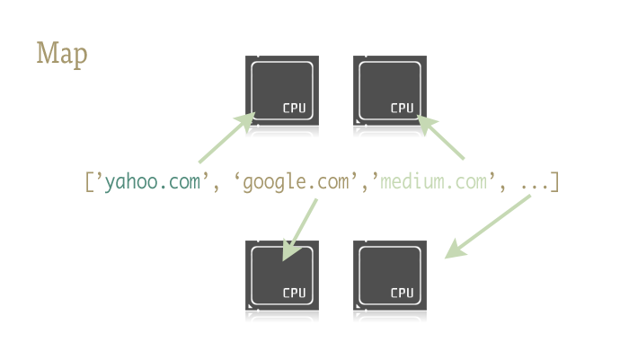

Map 概述¶
Python 的
map()是一个内置函数，允许您在不使用显式for循环的情况下处理和转换iterable中的所有项，这种技术通常称为映射。当您需要对迭代中的每个项应用转换函数并将它们转换为新的迭代时，map()非常有用。map()是 Python 中支持函数式编程风格的工具之一。
Map 的小示例¶
target = [1, 2, 3, 4, 5]
result = map(lambda x: x*x, target)
# [1, 4, 9, 16, 25]
map()¶
map() 函数接收两个参数，一个是函数 f，一个是迭代器（iterator），map() 函数在可迭代对象（iterable）的没一个元素上依次执行函数 f，并把结果作为新的迭代器返回，例如：
# 定义一个方法
def f(x)：
return x * x
arr = [1, 2, 3]
result = map(f, arr)
for item in result:
print(item)
🎯 需要注意的是 map() 函数在 Python2.7 中返回的是列表，在 Python3.x 返回的是一个迭代器。
实际上如果上述是一些比较简单的操作，是可以使用列表生成式来完成的，比如：
arr = [1, 2, 3]
result = [x * x for x in arr]
for item in result:
print(item)
更强大的 map()¶
通常我们使用 map() 函数来批量执行一些操作，例如批量请求url，下面的代码是等价的。
urls = ["https://www.yahoo.com", "https://www.google.com"]
result = map(urllib2.urlopen, urls)
results = []
for url in urls:
results.append(urllib2.urlopen(url))
🤪 实时上，map() 不仅仅可以做简单的迭代运算，使用恰当的库，map() 函数可以轻松的实现多核并行运算。
Python 标准库中的
multiprocessing模块，有着一个极少人知但极为出色的子模块multiprocessing.dummy，盖子模块提供了map()函数的并行版本。

multiprocessing.dummy 是 multiprocessing 模块的克隆版，唯一的区别是：multiprocessing 是基于**进程**工作，而 multiprocessing.dummy 子模块使用的是线程。
小试牛刀¶
# 引入以下任意一行即可
from multiprocessing import Pool
from multiprocerssing.dummy import Pool as ThreadPool
实例化池对象：
pool = ThreadPool()
这句代码会创建一组可用的 worker ，启动准备工作并存入变量方便调用。pool 对象可以传入若干参数，但目前只需关注第一个参数：**进程/线程数**数量，这个参数用于设置池中的 worker 数量，默认值为机器的 CPU 核数。
一般来说，如果为
CPU密集型任务使用进程池（multiprocessing pool），更多的核心数意味着更快的速度，但是使用线程池（threading）来处理IO密集型任务时，不一定是核心数越多越好，这时需要试验一下确定池的最佳大小。
pool = ThreadPool(4) # 将池的大小设为4
如果创建了过多的线程，CPU 会浪费大量的时间在线程切换上，而不是做有用的事情，所以需要设置好合适的线程数。
示例¶
import urllib2
from multiprocessing.dummy import Pool as ThreadPool
urls = [
'http://www.python.org',
'http://www.python.org/about/',
'http://www.onlamp.com/pub/a/python/2003/04/17/metaclasses.html',
'http://www.python.org/doc/',
'http://www.python.org/download/',
'http://www.python.org/getit/',
'http://www.python.org/community/',
'https://wiki.python.org/moin/',
'http://planet.python.org/',
'https://wiki.python.org/moin/LocalUserGroups',
'http://www.python.org/psf/',
'http://docs.python.org/devguide/',
'http://www.python.org/community/awards/'
# ...
]
# 创建一个工作者线程池
pool = ThreadPool(4)
# 在各个线程中打开url，并返回结果
results = pool.map(urllib2.urlopen, urls)
#close the pool and wait for the work to finish
# 关闭线程池，等待工作结束
pool.close()
pool.join()
总结¶
multiprocessing.dummy 通过自动切换 CPU 密集型工作和 IO 密集工作并分配到各自的进程和线程以获得更快的速度，而无需手动的管理线程和进程，可以更加干净、可靠、简单的混合使用进程和线程。